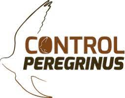
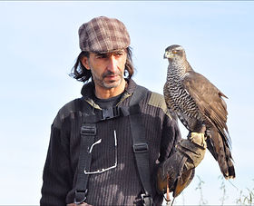
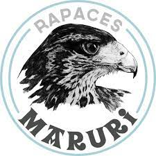
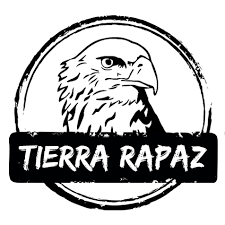
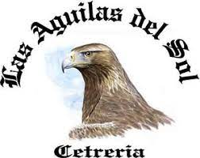
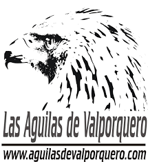

Empresas dedicadas a las aves rapaces
Control Peregrinus
Control Peregrinus es una empresa que, desde 2012, se dedica al control de plagas de aves. Francisco Rodero Hernández, su fundador, cuenta con más de 20 años de experiencia en el trabajo con aves de presa y el el adiestramiento de halcones para diferentes fines. Uno de ellos, el control de aves en Madrid
Águilas y Halcones Horus
Constituida en el año 2004,sus objetivos son:
Concienciar a la sociedad sobre la importancia de la
conservación
Informar sobre las buenas prácticas que afctan al ambiente
Rapaces Maruri
Actividades recreativas y de entretenimiento; actividades de conservación, gestión y control de poblaciones de todo tipo de fauna
Tierra Rapaz
parque de aves rapaces dedicado a la educación medioambiental, cuyo objetivo prioritario es acercar la ciencia y el estudio sobre estas aves al visitante . Integrado por biólogos, ornitólogos y naturalistas,exhibiciones de aves rapaces diurnas y nocturnas, visitas guiadas y contacto directo con las aves.
Las Águilas del Sol
 Equipo de cetreros y naturalistas que velan por la cría y promoción de los animales
* Exhibiciones de vuelo en libertad de muy diferentes especies.
* Mercados medievales: exposición y exhibición de vuelo de rapaces.
* Charlas en centros educativos.
Las Águilas de Valporquero
Dedicada al mundo de la cetrería, exhibición con aves rapaces, control de fauna y reproducción de aves. Desarrollan uno de los mejores espectáculos de rapaces en vuelo libre que hay en España.